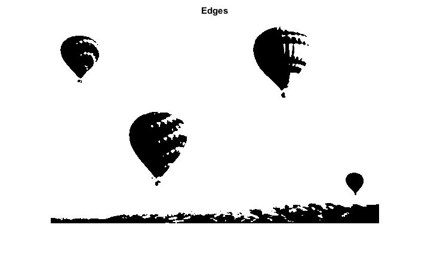
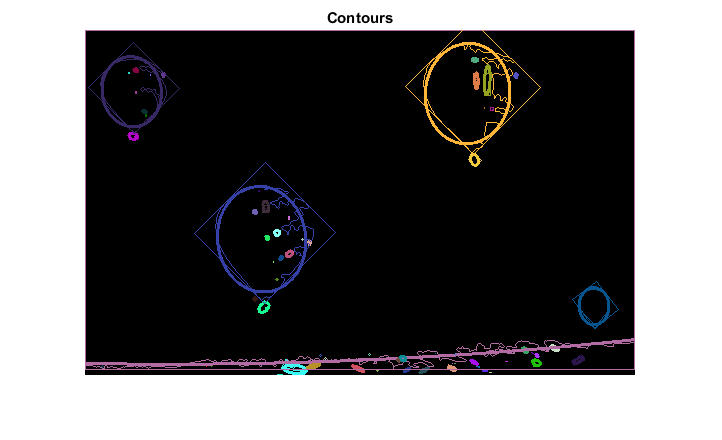

Creating Bounding rotated boxes and ellipses for contours
Demo code to obtain ellipses and rotated rectangles that contain detected contours.
In this sample you will learn how to:
- use the OpenCV function cv.minAreaRect
- use the OpenCV function cv.fitEllipse
Sources:
Contents
Input
% Load source image src = imread(fullfile(mexopencv.root(),'test','balloon.jpg')); % Convert image to gray and blur it src_gray = cv.cvtColor(src, 'RGB2GRAY'); src_gray = cv.blur(src_gray, 'KSize',[3 3]); % Create figure imshow(src), title('Source')

Edges + Contours
% Detect edges using Threshold thresh = 134; threshold_output = cv.threshold(src_gray, thresh, ... 'MaxValue',255, 'Type','Binary'); imshow(threshold_output), title('Edges') % Find contours [contours, hierarchy] = cv.findContours(threshold_output, ... 'Mode','Tree', 'Method','Simple');
Fit rectangles and ellipses
Find the rotated rectangles and ellipses for each contour
minRect = cell(size(contours)); minEllipse = cell(size(contours)); for i=1:numel(contours) minRect{i} = cv.minAreaRect(contours{i}); if numel(contours{i}) > 5 minEllipse{i} = cv.fitEllipse(contours{i}); end end
Draw
Draw contours + rotated rects + ellipses
drawing = zeros([size(threshold_output) 3], 'uint8'); for i=1:numel(contours) color = randi([0 255], [1 3]); % contour drawing = cv.drawContours(drawing, contours, ... 'ContourIdx',i-1, 'MaxLevel',0, 'Hierarchy',hierarchy, ... 'Color',color, 'Thickness',1, 'LineType',8); % ellipse if ~isempty(minEllipse{i}) drawing = cv.ellipse(drawing, minEllipse{i}, ... 'Color',color, 'Thickness',2, 'LineType',8); end % rotated rectangle rect_points = cv.RotatedRect.points(minRect{i}); for j=1:4 drawing = cv.line(drawing, ... rect_points(j,:), rect_points(mod(j,4)+1,:), ... 'Color',color, 'Thickness',1, 'LineType',8); end end % Show in a figure imshow(drawing), title('Contours')